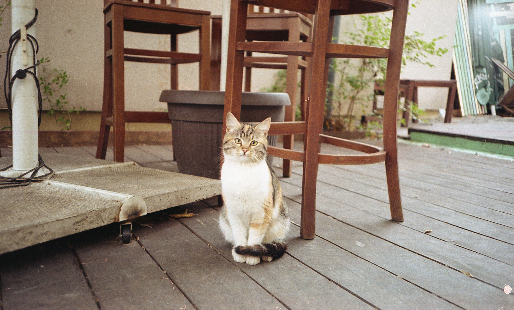
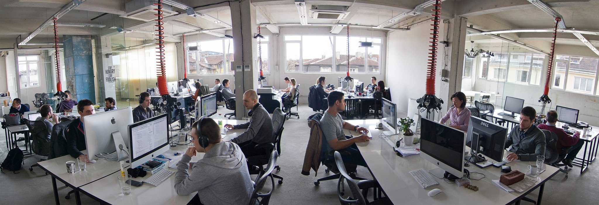
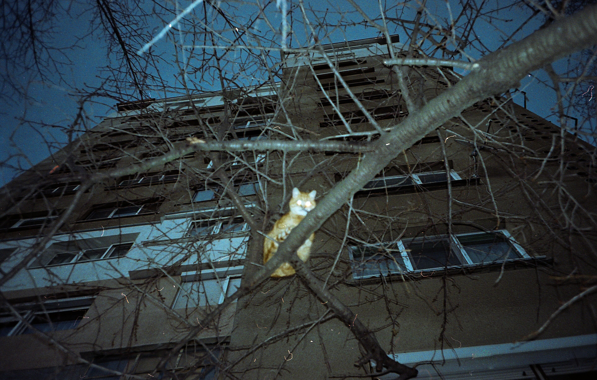
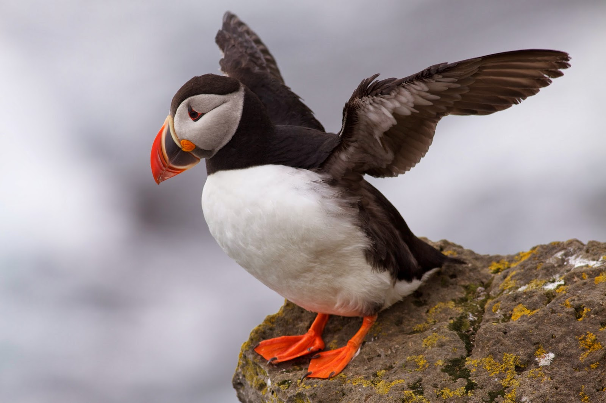

Stefan Vladimirov
Chief Creative at Swipes. Loves order and beauty. Always striving to achieve the balance between function
and aesthetics.

Motion Design Artist
Short intro
My name is Boris, I am a motion designer with interest in production.
When did you find your passion for motion and animation?
After my graduation I started exploring different softwares to find a proper tool to express my passions, I ended up loving animations and motion, so I continue to pursue and improve my skills in that direction.
How long have you been doing motion and animation?
Actively about two years.
Describe the beginning of your day
I brew some coffee and make a quick 30 minute scan of my favourite websites. Also I use Flickr so I get deep there from time to time making it more then 30 minutes.
What’s your workspace?
At home anything could be a workspace, wherever my laptop is - it’s a workspace for me. At work I’m really trying to keep a clean desk, minding that minimalism is the new cool thing, but honestly I really like surrounding myself with memorabilia, plants and books I never read, but I think I would.Sometimes I buy books just for the cover aesthetics and I’m not even ashamed of that.
You can check more at www.despark.com.
What’s your source of inspiration?
Mainly I get inspiration from nature and animals. It is awesome that everything that is already designed or thought of is perfectly done in what is surrounding us, I am not speaking about man made stuff. You can find visual, structural or informational patterns in nature. Like for example one of the last animations I did I needed to find a proper color palette to express warmth, security and confidence at the same time so I got the colors from a Puffin bird. They are crazy. living on edgy rocks in big colonies, taking care of their families and diving into deep water to get some food. Crazy fellas and so beautiful.
 What works are you most proud of?
I took a part of a small team for the construction of a website. www.teahousesofia.com/shop - they have two tea houses in Sofia and offer some of the best herbs and spices for a hot cup of water. I took part in the photography, and we ended up taking photos of more than 100 different type of teas. Also me and some friends just started a photoblog type of website, which is epic. http://www.dopefaces.com/
What are the tools you use in your day to day life?
Pen and paper, After Effects and Sketch. Currently I study other softwares but will get on that on a later stage.
Do you follow any set of principles for your work?
K.I.S.S.
What’s your favourite movie?
Alien franchise
What's your favourite book?
Niccolò Machiavelli - The Art of War
What advice would you give to people that start out with motion and animation?
Stay open for everything, you can get inspiration and experience from anything even if it sounds like not related to your goals.
Have you ever thought of empowering your creative community in any way, shape or form?
Sharing information and knowledge the same way I receive it.
Meet Boris on the Social Media
InstagramIt was a pleasure interviewing you, Boris.
Recommended reads